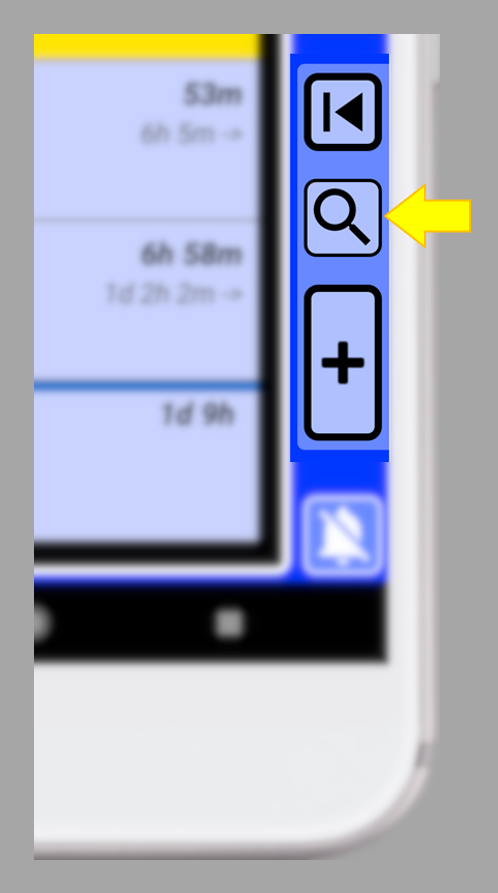

¿Por qué fue diseñado SECURElogBook como una herramienta de recolección de datos finamente ajustada?
Porque SECURElogBook utiliza tecnología avanzada para almacenar toda tu información en un solo lugar, incluyendo tus ideas, textos, hipervínculos, alarmas, recordatorios, ingesta de medicamentos, consumo de alimentos y bebidas, entrenamientos, notas relacionadas con el trabajo, listas de compras y más. Su poderoso sistema de búsqueda te permite agrupar y analizar tus registros, ayudándote a sacar conclusiones y hacer mejoras diarias. Este es el concepto central detrás de SECURElogBook.
El sistema de búsqueda se encuentra en la ventana principal (azul), dentro del área dedicada a los controles para la gestión de registros:

Para abrir el sistema de búsqueda, presiona este botón
Recuerda que con SECURElogBook no es necesario borrar cosas, al contrario, cuanta más información mejor.
Cada vez que presionamos el botón "SEARCH", SECURElogBook volverá a escanear todos los registros. Esto significa que cada vez que presionamos el botón se inicia una búsqueda completamente nueva.
Por defecto, la búsqueda está configurada como una lupa para permitirte encontrar cualquier cosa rápidamente. Por ejemplo, puedes buscar “Leche” y la búsqueda mostrará en la ventana principal (azul) todos los registros que tengan “Leche”. Esto incluso incluirá listas donde se encontró la palabra “Leche” como un artículo. Por defecto, la búsqueda no hace diferenciación entre mayúsculas o minúsculas, por lo que mostrará todo con “leche”.
Si quieres puedes usar las funciones avanzadas presionando el botón (D):
A = Título. Cuando hacemos una búsqueda, el número de registros encontrados se añadirá al final.
B = Cuadro de texto para ingresar lo que estamos buscando.
C = Botón para restablecer los parámetros de búsqueda.
D = Botón para mostrar/ocultar parámetros de búsqueda avanzada.
E = Fecha desde/inicio.
F = Fecha hasta/fin.
G = Tipo de búsqueda.
H = Búsqueda sensible a mayúsculas y minúsculas.
I = Botón de búsqueda.
J = Botón de cerrar.
Usar la búsqueda avanzada es como usar un microscopio. Podrás enfocarte en lo que realmente quieres. Cuando busques algo nuevo, es una buena práctica hacer la búsqueda predeterminada. Luego verás cuántos registros hay y cómo escribiste la palabra en esos registros. Tal vez haya diferentes variantes de la palabra que estás buscando (“leche”, “LECHE”, “Leche”). Finalmente, puedes buscar exactamente lo que quieres usando “Exacta” y sensible a mayúsculas si lo necesitas.
Como todo en SECURElogBook, el sistema de búsqueda es rápido y fácil de usar, pero tienes funciones adicionales si las deseas. La configuración de búsqueda predeterminada te ofrece una búsqueda amplia y es lo que normalmente usarás. Pero, si quieres, SECURElogBook te ofrece un poco más:
Tipo de búsqueda:
. Como (listas) = Muestra REGISTROS/LISTAS, si un ELEMENTO DE REGISTRO/LISTA CONTIENE la Palabra/s (predeterminado).
. Exacta = Muestra REGISTROS solo si un REGISTRO COINCIDE EXACTAMENTE con la Palabra/s o combinación de Palabras (con comodines).
Sensible a mayúsculas:
. DESACTIVADO = Los caracteres en mayúsculas y minúsculas NO NECESITAN COINCIDIR con la Palabra/s (predeterminado).
. ACTIVADO = Los caracteres en mayúsculas y minúsculas DEBEN COINCIDIR EXACTAMENTE con la Palabra/s.
Fecha:
. Sin fechas seleccionadas = Todo (predeterminado).
. Desde = Solo se mostrarán los registros cuya fecha sea la misma que la fecha “Desde”.
. Desde – Hasta = Solo se mostrarán los registros cuyas fechas estén entre la fecha "Desde" y la fecha "Hasta" (ambas incluidas).
Comodines
Al realizar una búsqueda, se pueden usar algunos símbolos para hacer la búsqueda más flexible, conocidos como comodines. Además del tipo de búsqueda, sensible a mayúsculas y fechas como parámetros de búsqueda, puedes usar comodines. SECURElogBook permite el uso de:
. Símbolo de porcentaje (%) = reemplaza una o más letras/números.
. Guion bajo (_) = reemplaza una letra/número.
Con el comodín “%” puedes buscar información que comience con, termine con o contenga algo:
. “%” al final => Comienza con 123 = 123%
. “%” al frente => Termina en 123 = %123
. Rodeado de “%” => Contiene 123 = %123%
Usando el símbolo de guion bajo, podemos encontrar nombres que tengan cinco letras y comiencen con “S” y terminen con “th”. Solo necesitamos buscar “S__th” (dos símbolos de guion bajo).
También puedes combinar ambos comodines. Por ejemplo, para encontrar nombres donde el segundo y tercer caracteres sean “hn”, puedes buscar “_hn%”.
Búsqueda múltiple (#)
SECURElogBook te permitirá encontrar lo que buscas, pero también puedes buscar más de una palabra a la vez para agrupar registros y sacar conclusiones de ellos.
Para activar la búsqueda múltiple, debes agregar el símbolo “#” delante de cada palabra. Puedes buscar hasta 5 palabras a la vez.
Etiquetado de datos
Puedes etiquetar tu información añadiendo un texto genérico al frente y luego puedes describirla. Gracias a etiquetar tus registros, puedes buscar cualquier cosa en segundos. Por ejemplo, puedes etiquetar con “AGUA” cada registro que sea una bebida (“AGUA café”, “Agua té”, “Agua mineral”, …).
Si etiquetas tu información, buscarla será muy fácil. Por ejemplo, si buscas “AGUA”, SECURElogBook mostrará cada vez que bebiste agua. Podrás hacer lo mismo con “COMIDA”, “DINERO”, …
La mayoría del software de alarmas solo te permite crear una alarma y posponerla, ¿verdad? Puedes hacer eso con SECURElogBook también, pero como dije, ¡SECURElogBook te ofrece más si lo deseas! Recuerda que SECURElogBook es una herramienta flexible. Entonces, en lugar de crear un registro para la alarma, puedes crear dos registros. Podemos llamarlos "HoraDeDormir IN" cuando te vas a dormir y "HoraDeDormir OUT" cuando te despiertas. Si quieres posponer la alarma, puedes crear copias del registro.
La aplicación de alarma regular te despertará y eso es todo. SECURElogBook también te despertará, pero almacenará toda la información, dejándote saber cuándo te vas a dormir y cuánto duermes. Y si pospones la alarma (haciendo copias de ella), podrás ver cuándo has dormido más de lo habitual. Los datos de sueño pueden revelar si experimentas problemas cuando tu patrón de sueño cambia.
Así como un análisis de sangre puede revelar tu estado de salud a través de ciertos químicos, nuestros comportamientos pueden indicar cómo nos sentimos. Por ejemplo, la cantidad de horas que dormimos y la frecuencia con la que nos duchamos son indicadores comunes. Las personas con depresión a menudo se duchan menos. Con SECURElogBook, puedes rastrear tus actividades diarias y notar cambios temprano, permitiéndote abordar posibles problemas antes de que se vuelvan serios.
Exportar búsqueda
Después de una búsqueda, si hay registros que se pueden exportar (indicados por “1”), el botón de exportar búsqueda “2” aparecerá en la esquina inferior izquierda del cuadro de diálogo de búsqueda.
El botón de exportar búsqueda “2” convierte los registros en datos que el sistema de importación de SECURElogBook puede usar para recrear los registros. Esto te permite compartir tu información si lo deseas. Por ejemplo, un gerente de empresa podría crear tareas/registros y enviarlos a los trabajadores. O, un médico, podría crear los registros para programar la medicación del paciente. O, un dietista, puede crear la dieta del paciente. O simplemente podrías enviar la lista de compras a tu pareja.
Cuando presionas el botón de exportar búsqueda “2”, SECURElogBook creará bloques de datos que puedes pegar fácilmente en formato de texto. Luego puedes añadirlo a un correo electrónico y compartirlo con quien quieras.
Crear informe
Después de una búsqueda, si hay registros que se pueden usar para crear un informe (indicado por “1”), el botón de búsqueda de informes “3” aparecerá en la esquina inferior izquierda del cuadro de diálogo de búsqueda.
El botón de búsqueda de informes “3” creará un informe con todos los registros para que una persona pueda entenderlos. Por ejemplo, si llevas un registro de todo lo que comes y bebes y tienes un problema médico, podrías crear una lista de todo lo que comiste y bebiste recientemente y enviarla por correo electrónico a tu médico. El médico verá una lista que se puede leer sin usar ningún software especial.
Cuando presionas el botón de búsqueda de informes “3”, SECURElogBook creará bloques de datos que puedes pegar fácilmente en formato de texto. Luego puedes añadirlo a un correo electrónico y compartirlo con quien quieras.
Cuanta más información haya en tu búsqueda, más bloques de datos se crearán. Luego puedes mantener presionado cada bloque de datos en la pantalla para permitirte copiarlo:
El informe consistirá en datos de texto plano que cualquiera puede leer sin necesidad de software especial.
Ejemplo de búsqueda
Veamos un ejemplo sencillo para ver cómo funciona el sistema de búsqueda.
Supongamos que tenemos estos registros:
Básicamente, tenemos un montón de registros donde la mayoría de ellos tienen la palabra milk de diferentes maneras. Podemos encontrar que todo el registro es “milk” o “Milk”. En un registro la palabra “milk” está al final. En otro, la palabra “Milk” está al principio… El sistema de búsqueda te permitirá encontrar cualquier cosa incluso cuando tengas miles de registros.
1. Para abrir el sistema de búsqueda en la ventana principal (azul), presiona el botón indicado con la flecha:
2. En este ejemplo vamos a buscar “Milk”, así que escribimos “Milk” y presionamos el botón “SEARCH”:
Recuerda que por defecto el sistema de búsqueda realiza una búsqueda genérica, por lo que te dará una vista amplia de lo que estás buscando.
Estos son los resultados de la búsqueda:
Nota cómo el botón de búsqueda es amarillo y la palabra “SEARCH” reemplaza los números del contador de tareas (esquina superior izquierda). Esto indica que estamos en modo de búsqueda, lo que significa que la lista no muestra todos los registros (solo muestra lo que estamos buscando).
Como podemos ver, tenemos diferentes variantes de la palabra que estamos buscando: “milk”, “Milk”. Debido a que la búsqueda predeterminada te da una vista amplia, podemos ver que muestra todos los registros que contienen “milk”, incluyendo toda la lista donde se encontró “milk” como un artículo.
SECURElogBook, por defecto, añadirá las listas a los resultados de búsqueda, por lo que si estás buscando un producto, el sistema de búsqueda te mostrará todas las listas de compras en las que está ese producto, para que puedas ver en qué tienda o tiendas estás comprando ese producto.
3. Si abrimos la búsqueda nuevamente, podemos ver qué configuraciones de búsqueda hemos utilizado:
Los parámetros resaltados en amarillo son las configuraciones predeterminadas. Cada vez que presionas el botón de restablecer búsqueda
La ventana de búsqueda también mostrará el número de registros encontrados, añadiéndolos al final del título.
El botón de restablecer búsqueda
4. Después de presionar el botón “SEARCH”, la búsqueda indica que se encontraron 6 registros (añadidos al final del título). Pero podemos ver 5 registros que contienen “Milk”. El extra se debe a la lista “LISTA DE COMPRAS Asda” donde se encontró milk:
La razón de ese registro extra es que el tipo de búsqueda predeterminado “Como (listas)” incluirá la lista dentro de los resultados.
5. Para eliminar la búsqueda, solo necesitamos seguir los pasos en el cuadro de diálogo de búsqueda:
Eliminar la búsqueda es como un juego de lógica muy fácil donde necesitas eliminar el amarillo. Cuando iniciaste la búsqueda, el botón de búsqueda se volvió amarillo y la palabra “SEARCH” reemplaza los números del contador de tareas en la esquina superior izquierda. Para eliminar la búsqueda, presiona el botón amarillo de restablecer búsqueda
El mensaje temporal en la parte inferior de la pantalla confirmará que la búsqueda ha sido eliminada (recuerda que puedes tocar cualquier mensaje en la parte inferior para cerrarlo).
El botón de restablecer búsqueda
Eso significa que podremos tener una búsqueda amplia como predeterminada:
1. Fecha = Sin fechas seleccionadas = Todo.
2. Tipo de búsqueda = Como (listas) = Muestra REGISTROS/LISTAS, si un ELEMENTO DE REGISTRO/LISTA CONTIENE la Palabra/s.
3. Sensible a mayúsculas = DESACTIVADO = Los caracteres en mayúsculas y minúsculas NO NECESITAN COINCIDIR con la Palabra/s.
6. Si deseas buscar solo los registros (sin incluir listas) puedes usar el tipo de búsqueda “Exacta”. Por ejemplo, puedes buscar “%milk%” (eso significa todo lo que contenga “milk”):
Observa cómo añadimos los comodines, al frente y atrás, para crear la misma búsqueda pero sin registros adicionales de las listas.
7. Después de presionar “SEARCH”, solo veremos en nuestros resultados registros que contengan “milk”:
Al usar el tipo de búsqueda “Exacta”, los resultados pueden mostrar registros individuales de una lista (como el registro amarillo), ya que esta búsqueda ignora la información adicional de la lista. Para ver toda la lista que contiene la palabra buscada, usa el tipo de búsqueda “Como (listas)” en su lugar.
8. Ahora vamos a usar el tipo de búsqueda “Exacta” sin usar comodines “%”. Así que, buscaremos “Milk”:
9. Después de presionar “SEARCH”, solo veremos en nuestros resultados registros que coincidan con “Milk” con sus posibles variantes (“Milk”, “milk”):
Debido a que usamos el tipo de búsqueda “Exacta” y no añadimos ningún comodín, los registros en la lista deben coincidir con “Milk”. Pero no hará diferenciación entre variantes en mayúsculas o minúsculas (ya que no lo activamos).
10. La búsqueda más precisa se puede lograr usando el tipo de búsqueda “Exacta” con sensible a mayúsculas ACTIVADO. Con esta condición, el resultado de la búsqueda debe coincidir exactamente con lo que estamos buscando. Por ejemplo, podemos buscar “milk”:
11. Después de presionar “SEARCH”, solo veremos en nuestros resultados los registros que coincidan exactamente con “milk” (no se permiten variantes):

Solo un registro tiene milk escrito en minúsculas y coincide exactamente con “milk”. Porque cuando sensible a mayúsculas está ACTIVADO, los caracteres en mayúsculas y minúsculas DEBEN COINCIDIR EXACTAMENTE con la Palabra/s (en este caso era “milk”).
Buscar múltiples palabras al mismo tiempo
Cuando buscas múltiples palabras al mismo tiempo, la lista solo mostrará los registros que contengan esas palabras. Eso significa que tendrás todos tus registros en un solo lugar para permitirte sacar conclusiones de ellos. Esto puede ayudarte a aprender cosas sobre ti mismo y mejorar cada día.
Para activar la búsqueda múltiple, debes agregar el símbolo “#” delante de cada palabra. Puedes buscar hasta 5 palabras o términos de búsqueda a la vez.
1. Por ejemplo, si queremos encontrar registros que contengan “agua” y “compras” solo necesitamos agregar el comodín delante de cada palabra:
2. Después de presionar “SEARCH”, solo veremos en nuestros resultados los registros que contienen “agua” y “compras”:
Como siempre, los registros se ordenarán por tiempo en orden ascendente. Además, debido a que usamos la configuración de búsqueda predeterminada, SECURElogBook te dará una vista amplia con todo lo que encontró “agua” y “compras”.
Puedes hacer un pequeño experimento para medir cuántas horas de sueño necesitas. Comienza creando dos registros: “HoraDeDormir IN” para cuando te vas a dormir y “HoraDeDormir OUT” para cuando te despiertas. Al final de cada día, crea otro registro para indicar cómo te sentiste en términos de energía y actividad, que podemos llamar “NIVEL DE ENERGÍA”. Sigue este sistema durante una o más semanas (cuanto más tiempo, mejor) y considera cambiar cuánto tiempo duermes o cuándo te vas a dormir.
Después de un tiempo, puedes buscar “#HoraDeDormir#NIVEL DE ENERGÍA” en SECURElogBook, lo que te mostrará todos los registros que contengan esas palabras. Al revisar estos registros, aprenderás cuál es la forma más eficiente para ti de dormir. Idealmente, deberías mantener las mismas condiciones de sueño durante unos días, luego hacer un cambio y mantener las nuevas condiciones durante unos días. Esta información te ayudará a entender el mejor horario de sueño para ti, donde duermes menos pero tienes más energía.
Los resultados mostrarán 3 registros por cada día. El tiempo que dormiste se indicará en el primer registro de cada día, como el tiempo entre el primer registro (“HoraDeDormir IN”) y el segundo registro (“HoraDeDormir OUT”). Luego, el tercer registro describirá cómo te sentiste ese día.